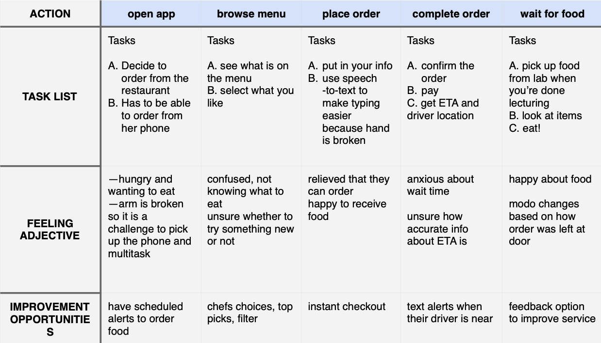

the product
koibito is a japanese restaurant in the san francisco bay area. the app allows users to deliver koibito directly to their location and targets users who need convenient options.
project duration
november 2021
to december 2021
koibito is a japanese restaurant in the san francisco bay area. the app allows users to deliver koibito directly to their location and targets users who need convenient options.
november 2021
to december 2021
background...
busy workers and commuters lack the time to prepare a meal, or drive to the restaurant for delicious koibito food
design an app that lets users easily order their favorite dishes from the restaurant
ux designer, designing the app from conception to delivery
conducting interviews, paper and digital wireframing, low and high-fidelity prototyping, conducting usability studies, accounting for accessibility, and iterating on designs
understanding the user...
user research summary...
understanding user pain points...
working adults are too bust to make their own meals at home
platforms for ordering food are not equipped with assistive technologies
competitive apps can be overwhelming with too many promotions, options. and features
customers do not want fast food and want to experience quality cuisine from anywhere neat a Koibito location
meet one of the personas...
their journey map...

starting the design...


paper wireframes...
digital wireframes...
low-fidelity prototypes...
usability study findings...
refining the design...
mockups...
before usability studies
after usability studies
before usability studies
after usability studies
high-fidelity prototypes...
accessibility considerations...
i provided access to users who are vision impaired through adding alt text to images for screen readers.
by using detailed images of food items, users were able to better understand the products they were looking at.
going forward...
takeaways...
the app lets users know koibito cares about delivering quality service and products.
“the app is really easy on the eyes and made it really easy for me to order japanese food to my house!”
—feedback from a user
while designing koibito, i learned that iterating on feedback is a great way to get a product to be more equitable, usable, enjoyable, and useful.
next steps...
conduct another round of usability studies to validate whether the pain points of the users have been addressed.
get feedback from users on how they compare our experience with the experience offered by direct and indirect competitors
incorporate features for seasonal sales campaigns that offer discounts, promos, etc.
conduct research to see how the ux experience contributes to product sales, user behavior, etc.